library(plotly)
library(dplyr)
library(gapminder)Data Visualization Types
Slides
You can review the slides below, which was used to record the video. Or you can jump directly to the following sections, which contain more detail about each type of visualization.
Slide 1
Slide 2
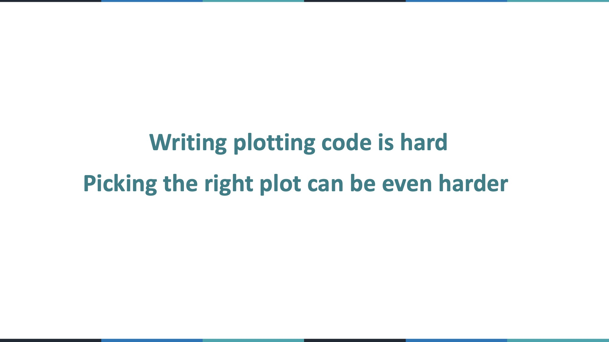
Slide 3
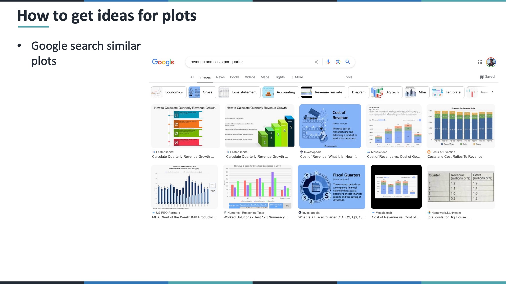
Slide 4
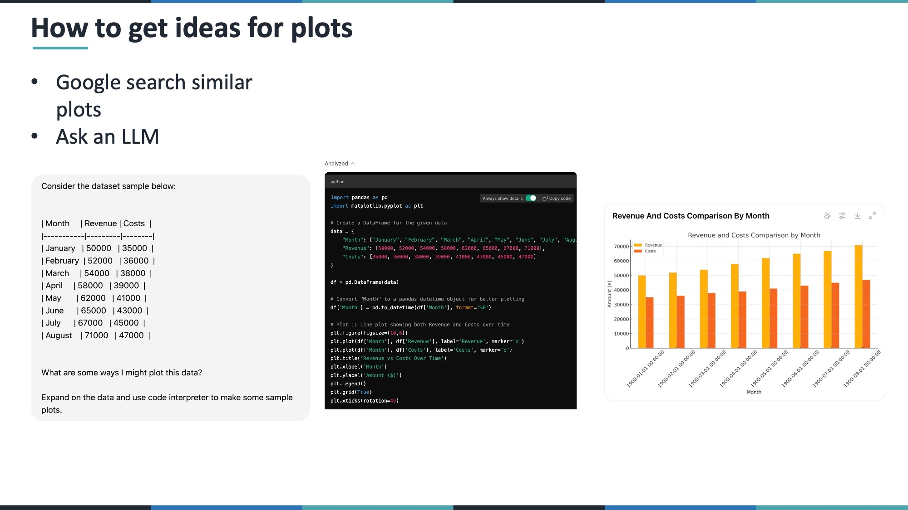
Slide 5
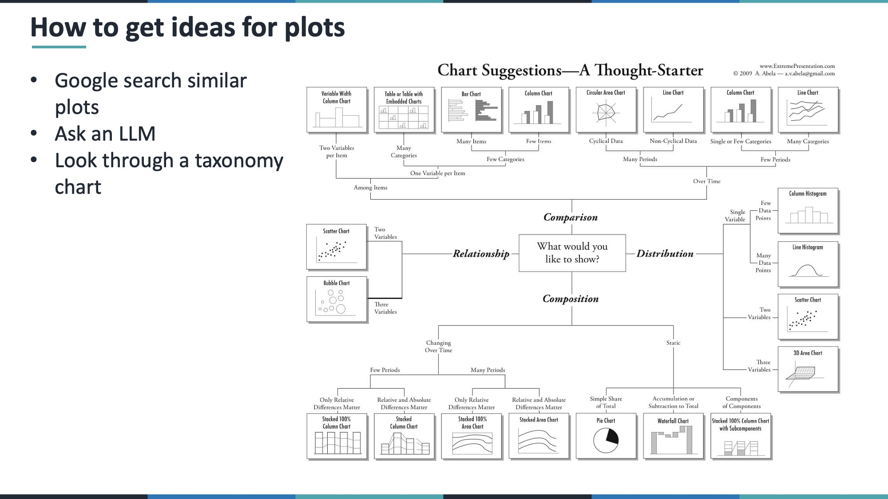
Slide 6
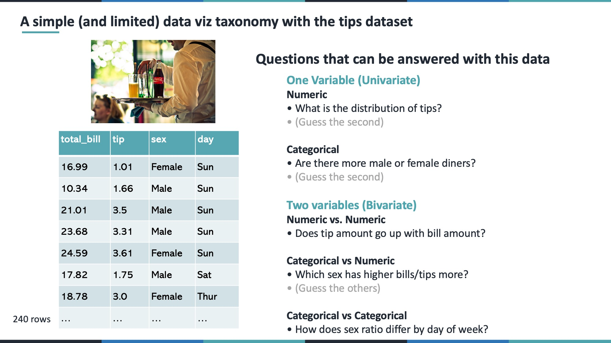
Slide 7
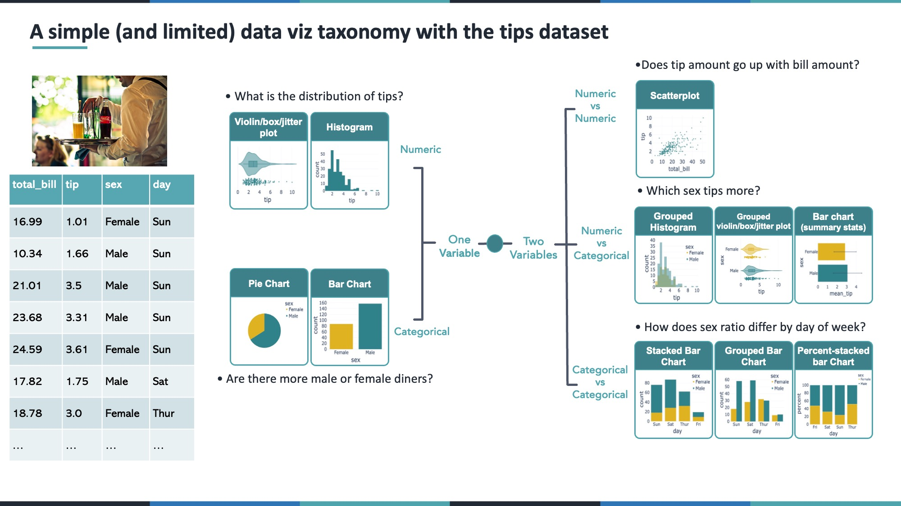
Slide 8
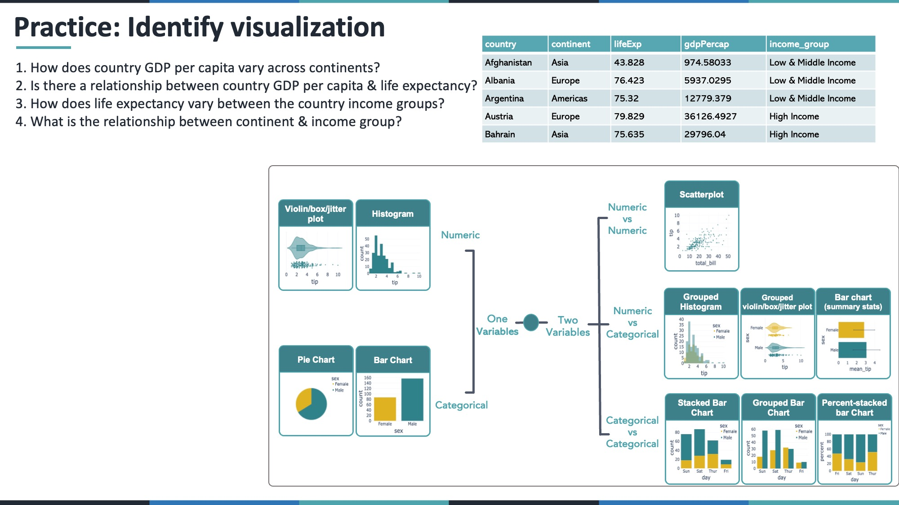
Slide 9
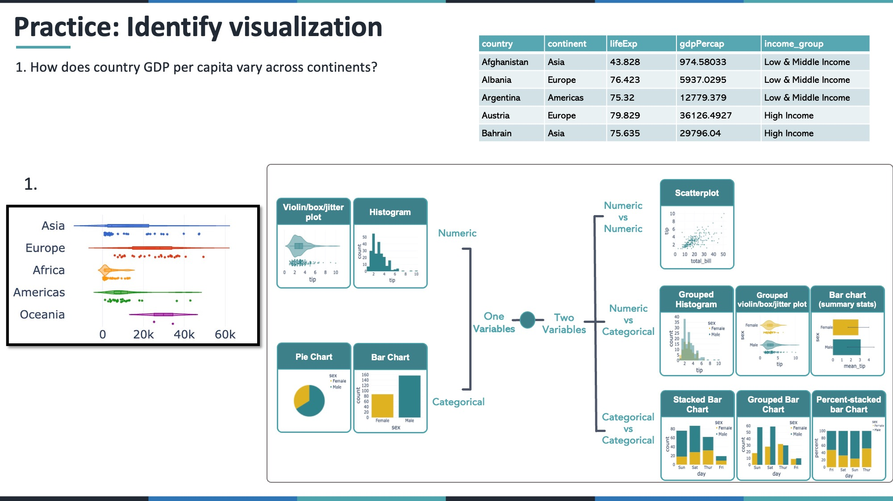
Slide 10
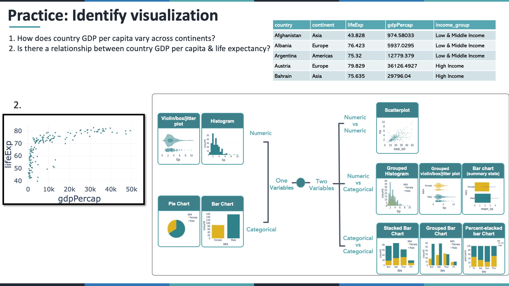
Slide 11
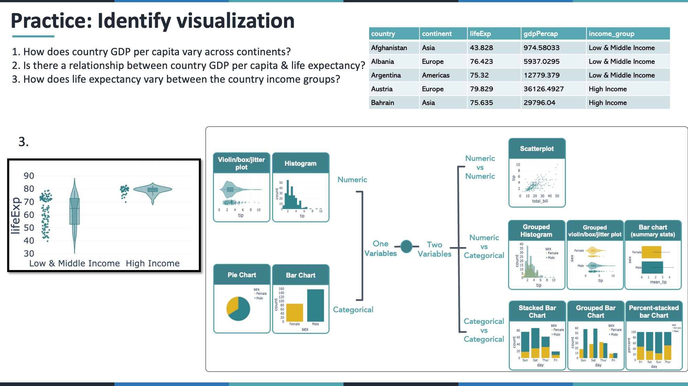
Slide 12
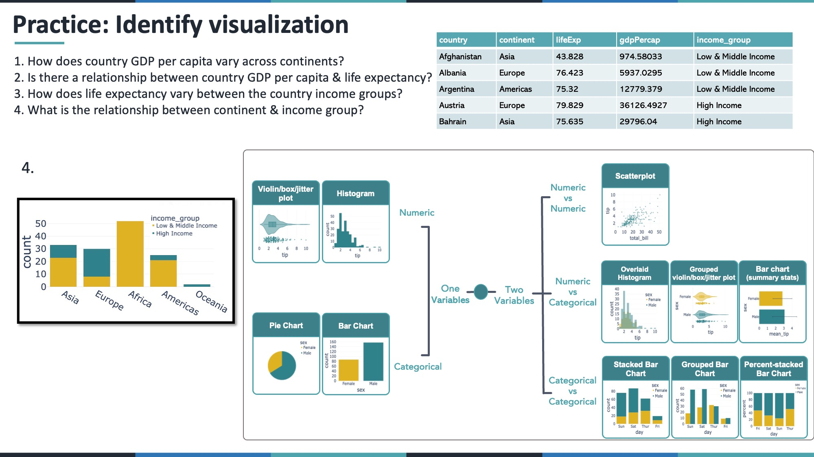
Slide 13
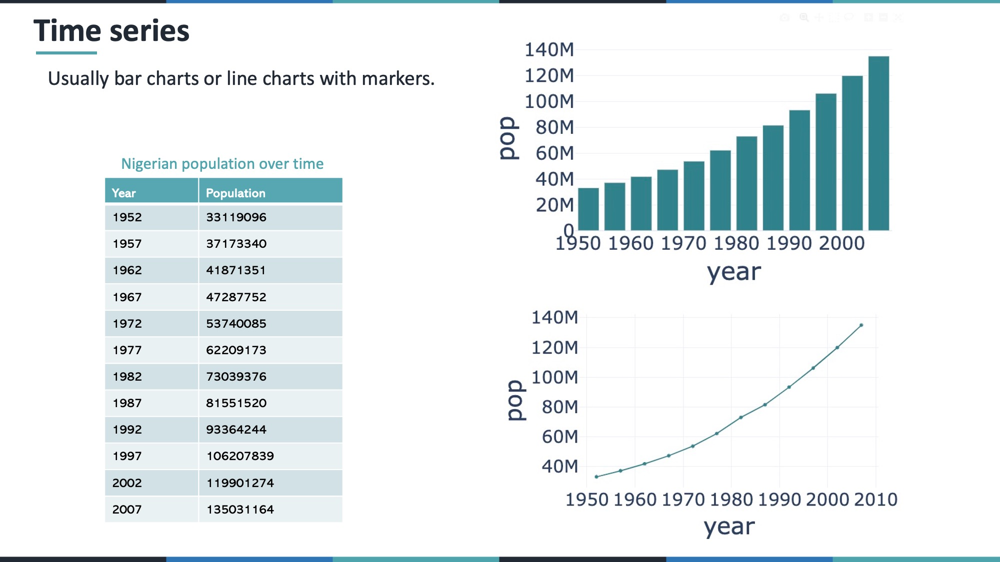
Slide 14
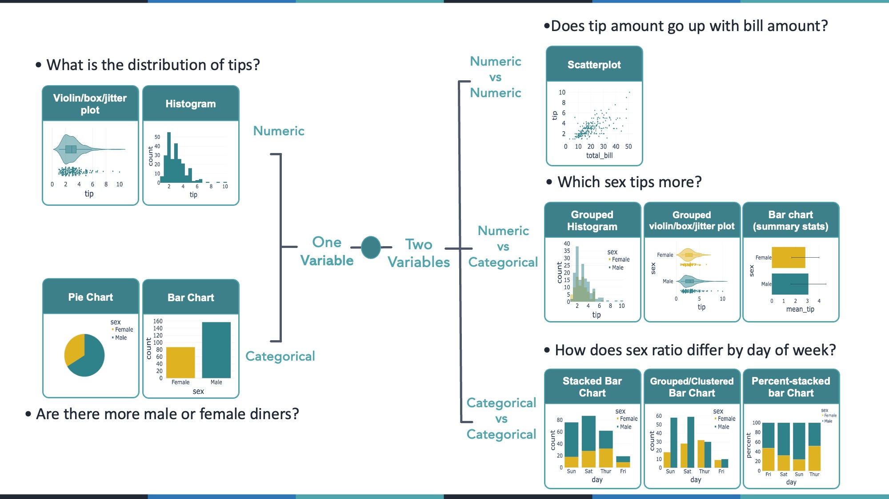
Introduction
In data visualization, there are typically three core steps:
- Wrangle and clean your data
- Select the appropriate visualization type
- Implement the visualization in code
In this lesson, we focus on choosing the correct visualization type using Plotly in R within RStudio.
We will use built-in R datasets such as:
mtcarsirisgapminder(R package)
Libraries
1. Univariate Plots
When analyzing a single variable, determine whether it is numeric or categorical.
1.1 Univariate Numeric
Example: Distribution of Miles Per Gallon (mpg) from mtcars.
Histogram
plot_ly(mtcars, x = ~mpg, type = "histogram")Box Plot
plot_ly(mtcars, y = ~mpg, type = "box")Violin Plot
plot_ly(mtcars, y = ~mpg, type = "violin",
box = list(visible = TRUE),
meanline = list(visible = TRUE))1.2 Univariate Categorical
Convert cylinders to a categorical variable.
mtcars <- mtcars %>% mutate(cyl = factor(cyl))Bar Chart
plot_ly(mtcars, x = ~cyl, type = "histogram")Pie Chart
plot_ly(mtcars, labels = ~cyl, type = "pie")2. Bivariate Plots
2.1 Numeric vs Numeric
Question: Does weight relate to fuel efficiency?
plot_ly(mtcars,
x = ~wt,
y = ~mpg,
type = "scatter",
mode = "markers")2.2 Numeric vs Categorical
Compare MPG across cylinder groups.
Grouped Histogram
plot_ly(mtcars,
x = ~mpg,
color = ~cyl,
type = "histogram")Box Plot by Category
plot_ly(mtcars,
x = ~cyl,
y = ~mpg,
type = "box")2.3 Categorical vs Categorical
Convert gears to factor.
mtcars <- mtcars %>% mutate(gear = factor(gear))Grouped Bar Chart
plot_ly(mtcars,
x = ~cyl,
color = ~gear,
type = "histogram",
barmode = "group")Percent Stacked Bar Chart
plot_ly(mtcars,
x = ~cyl,
color = ~gear,
type = "histogram") %>%
layout(barnorm = "percent")3. Time Series
Using the gapminder dataset.
nigeria <- gapminder %>% filter(country == "Nigeria")Line Chart
plot_ly(nigeria,
x = ~year,
y = ~pop,
type = "scatter",
mode = "lines+markers")4. Multivariate Example
GDP vs Life Expectancy (2007)
g_2007 <- gapminder %>% filter(year == 2007)
plot_ly(g_2007,
x = ~gdpPercap,
y = ~lifeExp,
size = ~pop,
color = ~continent,
type = "scatter",
mode = "markers")Practice Section
- Create a histogram of horsepower (
hp) inmtcars.
- Create a box plot of sepal length grouped by species using
iris.
- Create a time series of Ghana’s GDP per capita using
gapminder.
# Your code hereConclusion
Choosing the correct visualization depends on:
- Number of variables
- Variable type (numeric vs categorical)
- Analytical question
Most analytical storytelling can be accomplished with:
- Histograms
- Box/Violin plots
- Scatter plots
- Bar charts
- Line charts
Always begin with the question before selecting the plot type.